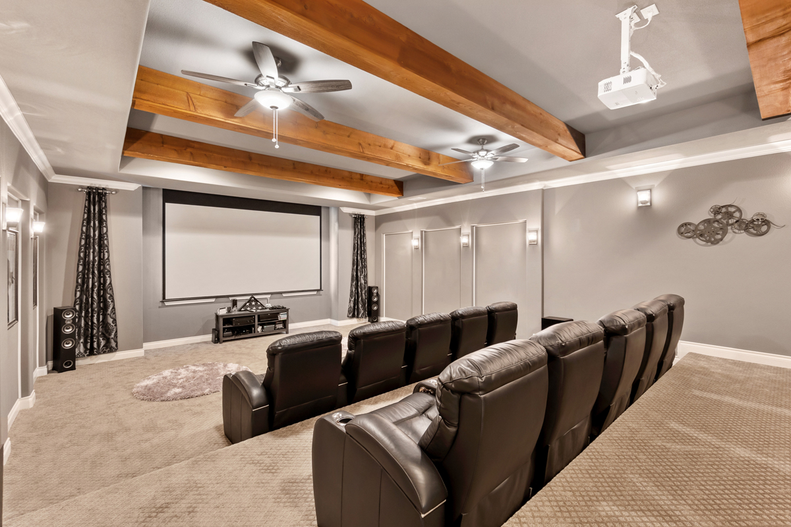
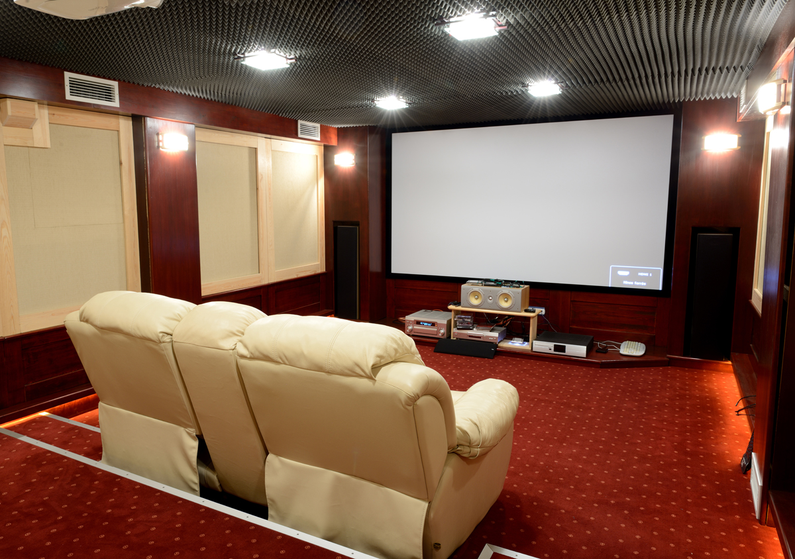

SHARE
It’s really during this time of year that you really take advantage of a home theater. Celebrate Christmas with your loved ones by watching a classic holiday movie, while you conspire around the fireplace. As the holiday season rolls in with its crisp air, cozy nights, and festive cheer, there’s no better time to take full advantage of your home theatre setup. Whether you're a movie buff, a gamer, or someone who simply loves gathering with family and friends, your home theatre can become the heart of your holiday entertainment.
Here’s how you can transform your space into a festive entertainment hub this season.
1. Holiday Movie Marathons
Nothing sets the mood quite like a good holiday movie. From classics like Home Alone and It’s a Wonderful Life to modern hits like Klaus and The Holiday, your home theatre can make each viewing feel like a night at the cinema—minus the lines and overpriced snacks.
Pro tip: Create a themed movie schedule and invite friends or family over each weekend. Add hot cocoa, popcorn, and fuzzy blankets for the ultimate experience.
2. Streaming Special Events
The holidays bring a flurry of live broadcasts—parades, concerts, holiday specials, and sporting events. Whether it's the Macy’s Thanksgiving Day Parade, New Year’s Eve countdowns, or seasonal Netflix specials, your home theatre allows you to experience it all in high definition with surround sound.
Bonus: With a smart setup, you can even pause, rewind, or stream these events on demand.

Home Theater for a Client in Smyrna, GA
3. Gaming Nights with a Festive Twist
If your home theatre includes a gaming console, holiday-themed games or seasonal DLCs (downloadable content) can bring new excitement to family game night. Think snowball fights in your favorite FPS or Christmas skins in your favorite RPG.
Get everyone involved with party games like Mario Kart, Jackbox, or Just Dance—great for groups and perfect for post-dinner laughs.
4. Virtual Gatherings on the Big Screen
Can’t be with everyone this year? Bring loved ones into your living room by streaming video calls on the big screen. It’s a heartwarming way to make distant family feel close, especially when sharing a meal, opening gifts, or simply chatting by the fire.
Platforms like Zoom, FaceTime, and Google Meet can be mirrored from your phone or laptop directly to your home theatre for a larger-than-life connection.

Home Theatre for a Client in Roswell, GA
5. Photo & Video Memory Nights
Create a slideshow of past holidays or family moments and display them on your big screen. Add a favorite playlist, light a few candles, and you’ve got an emotional, nostalgic evening that brings everyone closer together.
This is especially touching during family reunions or when honoring loved ones who can’t be present.
6. Create a Holiday Ambience
A home theatre isn’t just for entertainment—it’s a canvas. Use it to display digital fireplaces, snowy landscapes, or holiday scenes with music playing in the background. It instantly transforms your space into a winter wonderland, perfect for parties or quiet nights in.
Try this: YouTube has hours-long ambient videos (crackling fireplaces, snowfall, Christmas villages) in 4K that add a magical atmosphere without any effort.
During the holidays, it’s not just about the screen size or sound system—it’s about the memories you create with the people around you. A home theatre becomes more than just a tech feature; it’s a space for joy, connection, laughter, and tradition.
So this season, turn down the lights, grab a blanket, and let your home theatre bring a little extra magic to your holidays.